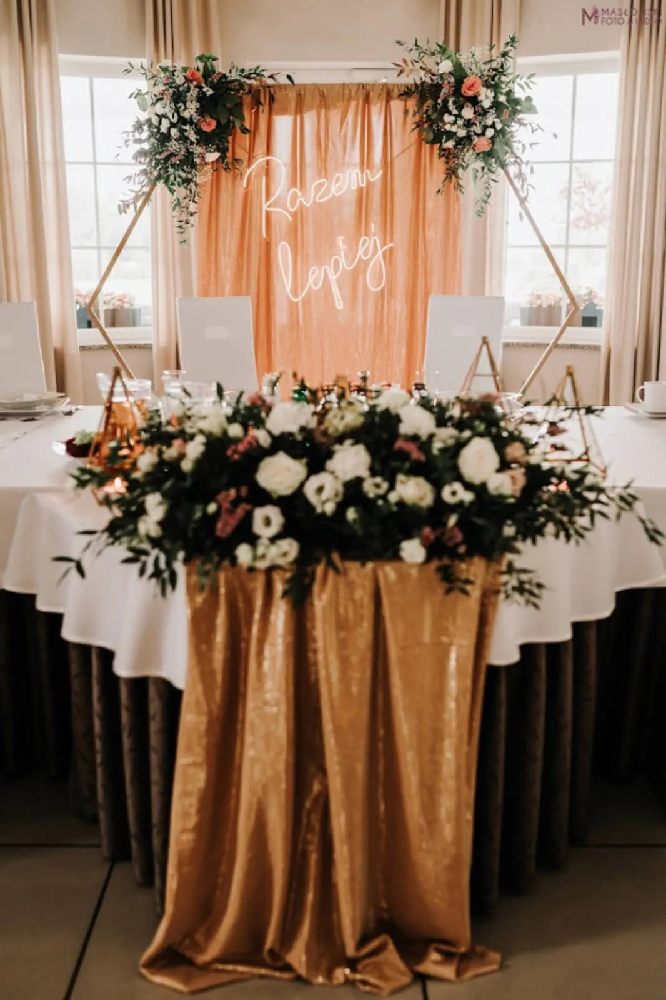
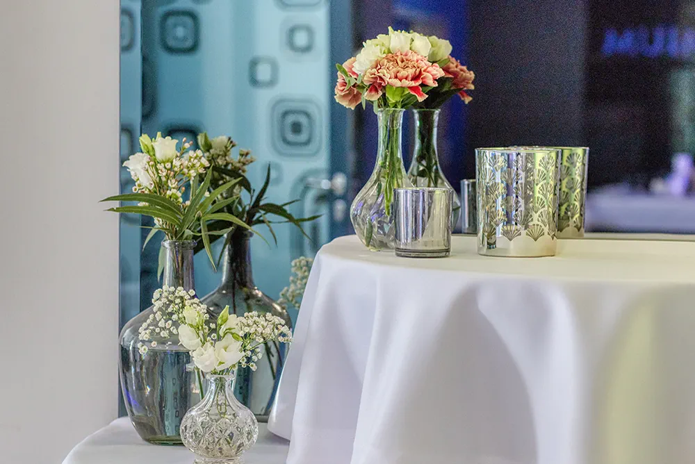
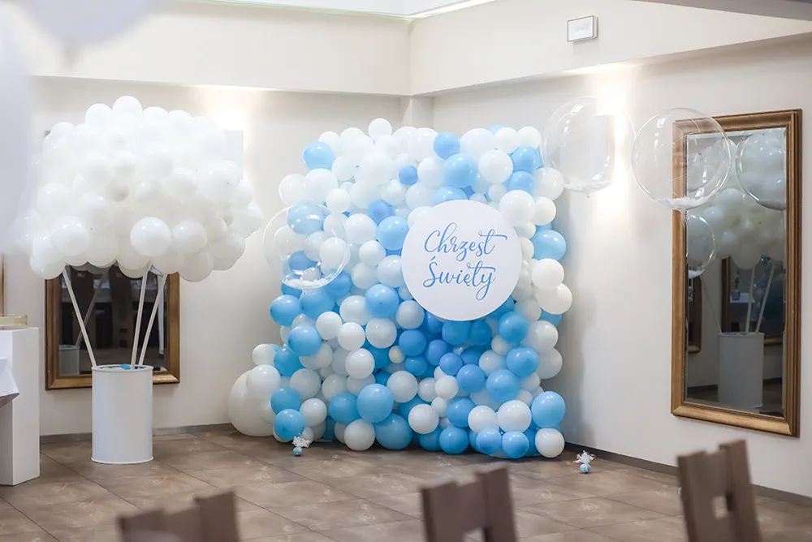

Wesela
Duża sala, opieka nad przebiegiem dnia, miejsce dla gości i ogród, który może stać się tłem ceremonii.

Dom Przyjęć PREMIUM · Radlin
Wesela, rodzinne przyjęcia i spotkania firmowe w miejscu, które pozwala cieszyć się gośćmi zamiast pilnować kolejnych szczegółów.
Zapytaj o terminW skrócie
Dom Przyjęć PREMIUM
Mamy przestrzeń na duże wesele i swobodę kameralnego przyjęcia. Do dyspozycji są dwie sale, ogród, pokoje dla gości oraz zespół, który zna plan wydarzenia od początku.
W opiniach goście najczęściej doceniają kuchnię, uważną obsługę, wygodę sal i atmosferę wokół całego miejsca. To właśnie te rzeczy porządkujemy przed każdą realizacją.
Umów spotkanie i obejrzyj salę
Sala główna
do 200 gościOkazje
Wybierz punkt wyjścia — resztę ustalimy w rozmowie, bez gotowego scenariusza narzuconego każdej uroczystości.
Duża sala, opieka nad przebiegiem dnia, miejsce dla gości i ogród, który może stać się tłem ceremonii.
Chrzciny, komunie, rocznice i urodziny — w sali kameralnej lub głównej, stosownie do liczby bliskich.
Spotkania zespołów, jubileusze i wieczory firmowe z miejscem na program, kolację i dobrą rozmowę.

Ceremonia w ogrodzie
Ogród daje ceremonii własną oprawę, a Wam — jedno miejsce na kolejne części dnia. Przed spotkaniem opowiedzcie nam, jak wyobrażacie sobie ten moment.
Sprawdź dostępnośćNajczęściej wracają trzy rzeczy: kuchnia, dopilnowana organizacja i atmosfera sali.
Zobacz wszystkie opinie w GoogleDoskonałe jedzenie, przemiła obsługa, piękne obejście.
Sala ładna, sprawna obsługa, bardzo dobre jedzenie.
Przestronne, przytulne miejsce z klasą.
Profesjonalna obsługa spełniła wszystkie nasze marzenia.
Galeria
Przesuwaj zdjęcia palcem albo wybierz ujęcie z dyskretnego paska.




Pierwszy krok
Podajcie termin, liczbę gości i rodzaj uroczystości. Najszybciej odpowiemy telefonicznie lub e-mailem.